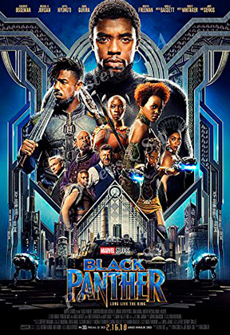

Avengers: Infinity War

Heltene og deres allierede har adskillige gange stået over for modstandere, der er for mægtige til at besejre for det enkelte individ. Men nu står gruppen over for den ultimative kosmiske trussel i form af Thanos. Skurken er på jagt efter de seks infinity stones, der - hvis de samles - giver Thanos ufattelige kræfter og gør ham i stand til at manipulere med intet mindre end vores alle sammens virkelighed.
Black Panther
Superheltefilmen 'Black Panther' er det seneste værk i Marvels store filmiske univers, der også tæller helte som Iron Man og Captain America. Handlingen tager udgangspunkt i det isolerede og teknologisk fremskredne land, Wakanda, hvor kongen netop er omkommet i et terrorangreb. Prins T’Challa står klar til at tage over som ny regent, men modstandere står klar både internt i landet og udefra.
Captain Marvel

Superhelte-filmen 'Captain Marvel' handler om rumvæsenet Vers, der efter en mislykket mission nødlander på planeten Jorden anno 1995. Her tager den unge Kree-kriger sine mægtige superkræfter i brug for at standse en gruppe rum-terrorister kaldet Skrulls. Vers er dog ikke alene, da hun kort efter ankomsten møder en ung Shield-agent ved navn Nick Fury.